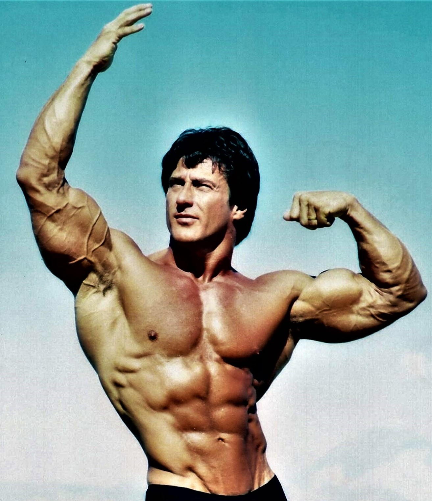

Frank Zane è una delle figure più iconiche e rispettate nel mondo del bodybuilding. Nato il 28 giugno 1942 a Kingston, Pennsylvania, Zane è conosciuto per la sua estetica impeccabile e il suo approccio scientifico al bodybuilding, che lo ha distinto dai suoi contemporanei e lo ha reso una leggenda nel settore.
Frank Zane ha iniziato la sua carriera agonistica negli anni '60 e ha raggiunto l'apice del successo negli anni '70, un'epoca spesso considerata l'età d'oro del bodybuilding. Ha vinto il prestigioso titolo di Mr. Olympia per tre anni consecutivi, dal 1977 al 1979, sconfiggendo avversari formidabili come Arnold Schwarzenegger e Franco Columbu. Zane era noto per il suo fisico armonioso e proporzionato, che contrastava con l'approccio più massiccio di altri bodybuilder dell'epoca. Prima di vincere il Mr. Olympia, Zane aveva già collezionato numerosi altri titoli importanti, tra cui Mr. America e Mr. Universe, dimostrando la sua eccellenza a livello internazionale.
Ciò che distingue Frank Zane è la sua filosofia di allenamento basata su precisione e dettagli. Zane ha sempre enfatizzato l'importanza della simmetria, della proporzione e della definizione muscolare, piuttosto che concentrarsi esclusivamente sulla massa. Il suo allenamento includeva una combinazione di sollevamento pesi, esercizi di isolamento e tecniche di meditazione e visualizzazione, che lo aiutavano a mantenere una mente concentrata e un corpo perfettamente scolpito. Zane era noto per la sua meticolosità, analizzando ogni aspetto della sua routine di allenamento e della sua dieta per ottimizzare i risultati. Credeva fermamente che il bodybuilding fosse un'arte tanto quanto una scienza, e il suo approccio olistico ha influenzato molti atleti.
Oltre all'allenamento, Frank Zane prestava grande attenzione all'alimentazione e alla supplementazione. Seguiva una dieta rigorosa e bilanciata, ricca di proteine magre, carboidrati complessi e grassi sani. Era un sostenitore dell'integrazione con vitamine e minerali per garantire che il corpo ricevesse tutti i nutrienti necessari per la crescita muscolare e la riparazione. Zane era avanti rispetto ai suoi tempi nella comprensione dell'importanza della nutrizione nel bodybuilding, e il suo approccio scientifico ha contribuito a definire gli standard moderni.
L'influenza di Frank Zane nel mondo del bodybuilding è evidente ancora oggi. Il suo approccio all'allenamento e alla competizione ha ispirato generazioni di bodybuilder a perseguire un fisico estetico ed equilibrato. Molti considerano il suo corpo come il modello ideale di bellezza e perfezione nel bodybuilding. La dedizione di Zane alla scienza dell'allenamento e alla cura del corpo ha elevato il bodybuilding a un livello superiore di sofisticazione e arte. Inoltre, la sua capacità di mantenere un fisico impressionante anche in età avanzata continua a motivare atleti di tutte le età.
Nel corso della sua carriera, Frank Zane ha ricevuto numerosi riconoscimenti e premi, non solo per le sue vittorie in competizione, ma anche per il suo contributo alla promozione del bodybuilding come disciplina sana e rispettabile. È stato inserito nella IFBB Hall of Fame e ha ricevuto il premio Arnold Schwarzenegger Lifetime Achievement Award, tra molti altri. Questi riconoscimenti riflettono il profondo impatto che Zane ha avuto sulla comunità del bodybuilding e sul fitness in generale.
In sintesi, Frank Zane è una leggenda vivente del bodybuilding, noto per la sua estetica unica, il suo approccio scientifico e la sua dedizione al miglioramento personale. La sua eredità continua a influenzare e ispirare atleti di tutto il mondo, rendendolo una figura centrale nella storia del bodybuilding. La sua vita e la sua carriera sono una testimonianza di ciò che si può ottenere con disciplina, intelligenza e passione.